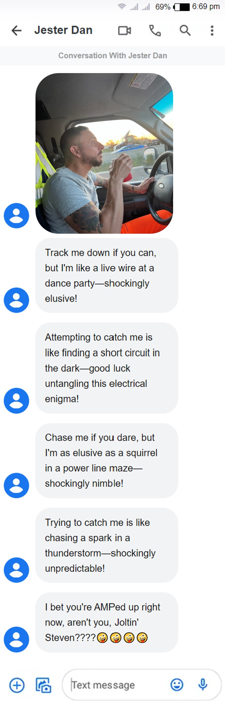
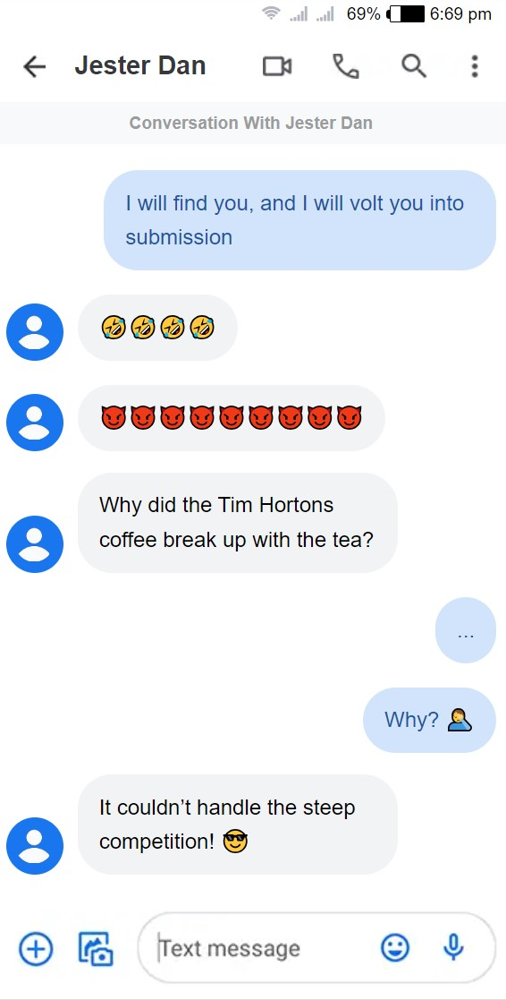
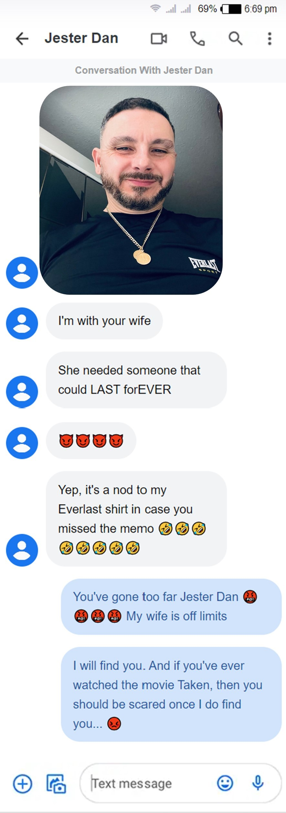

Watt a Fiasco: Tam Electric’s Italian Joker on the Loose!
Danny Russo, 49, the Italian joker, plays a game of hide-and-seek with the manager of Tam Electric, Steve, after releasing a string of shockingly terrible jokes at his coworkers in Pickering
Move over Gotham, Pickering has its own clown prince of crime, and he goes by the name of Danny Russo. This 49-year-old jokester escaped after unleashing a comedic storm at Tam Electric.
This jestful troublemaker was last spotted at Blue Sky in Pickering on December 15, 2023, around noon, purchasing an unusually small jar of Vaseline, presumably for his next comedic escapade. After the purchase, he hastily exited the store, persistently mimicking and ridiculing an Asian female employee who had advised him against buying a bag for the 45-cent Vaseline jar.
Intrigued by the peculiar scene, his colleague Josh observed Danny deeply engrossed in a self-dialogue, humorously reenacting the store incident as he walked back to his truck. Josh recounting the experience, states, “I was just heading to Blue Sky to grab my usual Bombay chicken, and there I spot Danny walking out of the store, speaking to himself, impersonating an Asian lady. I sensed something was off, so I continued to observe him to see what he would do next. He hopped into his truck and just drove off, leaving the job site. That’s when I decided to call our manager Steve to inform him about what was going on.”
Law enforcement officers are struggling to direct traffic amid the mayhem caused by the hunt for the pun-wielding escapee.
Plumbing Catastrophe
Known for his false impersonations, Russo recently posed as a plumber in a viral TikTok video, showcasing a giant frozen leak. Authorities are warning citizens to stay vigilant and avoid any plumbing advice from this jester. Tam Electric workers brace themselves for the next wave of hilariously terrible punchlines as they await Russo’s next move.
Danny Russo, self-proclaimed plumber, adamantly denies any plumbing issues and instead identifies the giant frozen leak as nothing more than a freezer. The video concludes with the Italian joker taking an unintentional plunge from the icy scene - an ironic twist that some might call karma in action.
Manager Steve's Shocking Encounter: Electric Wit and Tim Hortons Drama
The manhunt took a sidesplitting turn when Steve, the beleaguered manager of Tam Electric, reported receiving a series of horrific electrical "catch me if you can" jokes from the elusive comedian. Accompanying these jokes was a picture of Russo, making a grand escape in the company's truck while leisurely sipping Tim Hortons coffee.
Picture that Danny Russo sent to his manager coupled with some terrible jokes to terrorize him.

Text messages Steve received from Danny while on the run, leaving him distraught.
Ohm My Goodness: Steve's Electric Comebacks to Danny's Jolting Jests

Text messages between Steve and Danny depicting a desperate attempt by Steve to communicate with the jokester.
Attempting to counter Russo's comedic onslaught, Steve fired back with a pun:
"I will find you, and I will volt you into submission," he bravely declared, in an attempt to short-circuit Russo’s escapades.
Undeterred, Russo took aim at his Tim Hortons coffee cup with a zinger:
"Why did the Tim Hortons coffee break up with the tea?" Russo asked.
"Why?" cautiously inquired Steve.
"It couldn’t handle the steep competition!" Russo quipped, sending Steve into a sea of emotional turmoil.
"It was a total comedy meltdown. He's unhinged... No off switch in sight. We were aware he had a knack for humor, but we optimistically believed we could keep it under wraps. Alas, it spiraled into chaos. The tipping point? Well, that was the day our marvelous apprentice, Sarah, joined the team. It was as if the floodgates of humor had burst wide open, and we found ourselves swimming in a sea of punchlines we couldn't control," Steve reveals with a weary sigh.
Steve’s Nightmares Continues: Everlast Sport Shenanigans
Just when Steve thought it couldn't get worse, he received another message later that night featuring a picture of him in an Everlast Sport shirt. Russo's message? “I’m with your wife. She needed someone that could LAST forEVER. Yep, it’s a nod to my Everlast shirt in case you missed the memo.”
“My heart plummeted when I read that message. When Danny ventures into the dangerous territory of explaining his own jokes, it’s like witnessing a stand-up tragedy unfold. That’s when the alarm bells started ringing in my head — we’re knee-deep in trouble,” Steve shared with a voice that cracked like a punchline falling flat. “I admit, I might have tossed in a threat to end him in the message… But honestly, I never had any real intention to follow through. It’s just the pent-up frustration from enduring years of his relentless comedic assaults,” confessed Steve, his eyes welling up as he reflects on the countless distressing memories.
Photo Danny sent to Steve to further taunt him.

Text exchanges between Steve and Danny where Danny escalates his torment with shockingly terrible wordplay
Tam Electric's Tale of Terror: Colleagues Share Shocking Stories
The fallout from Russo's comedic rampage extends beyond Steve, with Tam Electric colleagues sharing their own tales of hilarity-induced trauma.
Josh
Josh, shaking his head in disbelief, shared, “When I broke up with my girlfriend, Danny hit me with this joke: 'Why did the electrician break up with his girlfriend? Because she couldn’t resist his ohm-azing charm!' I mean, seriously? In the midst of heartbreak, there I was, expecting some sympathy or at least a pat on the back, but no. Danny just had to throw in a pun. The guy can't resist turning any situation into a punchline.” Russo was just getting started, as he then escalates the comedic terrorization to the next level. “And it doesn’t stop there… Every single day he bombards me with a song that is constantly repeating my ex-girlfriend’s name. The tune is permanently engraved into my brain… He’s driving me mad. I had to laugh though – not because it was genuinely funny, but because I couldn't believe he'd pull that stunt at a time like that. Classic Danny, finding humor in the most unexpected places,” cries Josh.
Kester Charles
KC, the entertainment guru at Tam Electric, shared, “I always have movies and shows playing in the background while I work. It helps me get through the day. But like clockwork, post-lunch, Danny drops his gem, ‘Why does KC haul his TV to work? Because he wants to be shockingly current with his shows and joltingly up-to-date with his movies!’ It got a chuckle out of me initially, but c’mon, every single day? It’s making my cinematic ambiance lose its spark…”
Agron
Agron chuckled dryly, remarking, “If I had a dollar for every time Danny called me something other than my name, I’d be rich enough to hire a comedian to follow him around and give him a taste of his own medicine.” He then adds, “If Danny ever remembers my real name, I might just need to throw a party. It’s become rarer than a good punchline around here.”
Sarah
Sarah revealed, "I mentioned to him that my dad has been surprisingly affectionate lately, and his response was to claim it's because he's cheating on my mom. Since then, he won't let it go. Every encounter, it's the only topic on his comedic agenda, followed by fits of laughter. It's etched in my mind, and, honestly, it wrecked my bond with my father.”
Tune of Redemption: Steve Strikes a Chord with the Joker
Danny is infamous for his mischievous habit of playing songs that incessantly repeats the names of inarticleiduals his colleagues would rather forget. Here’s the ironic twist: Danny’s real name is Dante, a moniker he despises with a passion. Steve, in a desperate attempt to snap him back to reality, resorted to using Dante. Knowing it could be a turning point, Steve sent Danny a song echoing his name on repeat.
In response, Russo sent a voice recording, tearfully expressing his disapproval, declaring it wasn’t amusing. For Steve, this was a breakthrough. “He said that it was not funny… Finally, something that he finds that is not funny. It worked. That means there is hope to bring him back,” remarked Steve. Unfortunately, this glimmer of progress was short-lived, as Danny fell silent. He ceased responding to messages, leaving his whereabouts a mystery.
The Dante Song that silenced the Italian joker.
Tam Electric issues a plea for vigilance, urging everyone to keep an eye out for Danny Russo, albeit with caution due to the potential risk he may pose. The company implores the public to remain watchful for this jester on the loose.
Related News
Beware: The Italian Joker, Danny Russo, Plots His Next Grand Scheme
Warning: Danny Russo Strikes Again, Posing as a Plumber
Danny Strikes a Deal with Josh to Test a Joke-Free Day
Poor Witch Marries Danny Believing He’s a Skeleton
In The Name of Romance: Danny Russo Declares Joke-Free Truce for Love’s Sake
Back in the Game: Danny’s Single and Ready to Mingle!